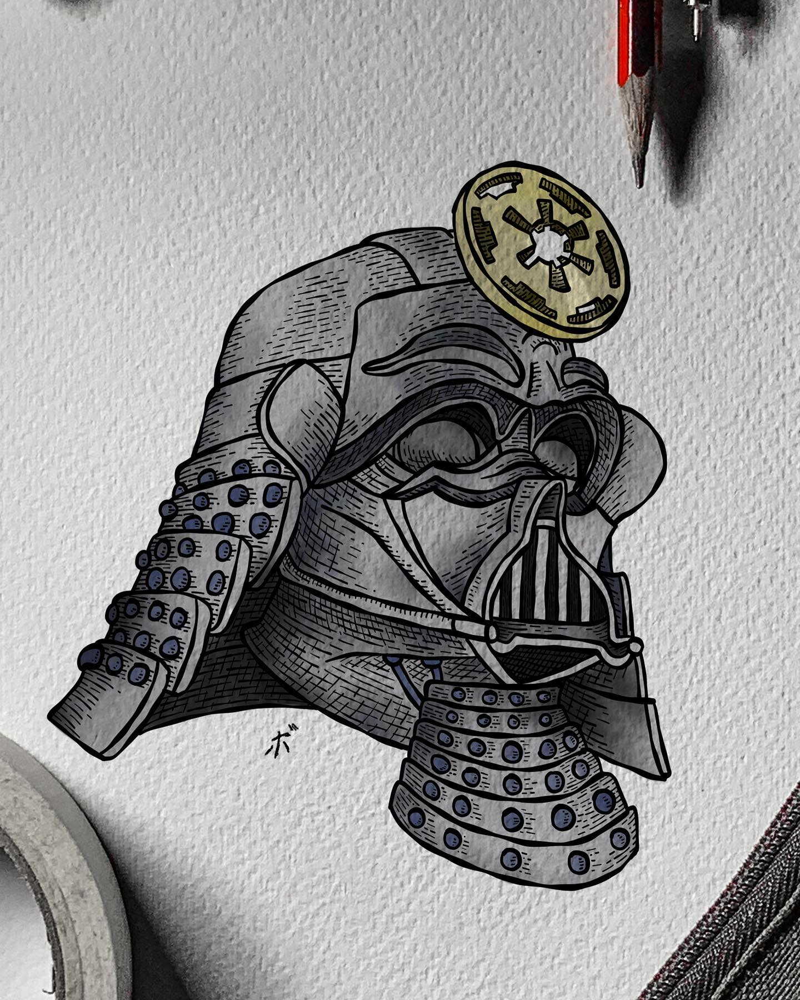

En este curso, aprenderás los conceptos básicos del desarrollo web, incluyendo HTML, CSS y JavaScript. Al finalizar el curso, serás capaz de crear sitios web interactivos y atractivos.
Los selectores básicos en CSS te permiten seleccionar elementos HTML para aplicar estilos. Algunos de los selectores más comunes incluyen:
p para seleccionar todos los párrafos..mi-clase para seleccionar todos los elementos con la clase "mi-clase".#mi-id para seleccionar el elemento con el ID "mi-id".Ejemplo de selector de tipo
Ejemplo de selector de clase
Ejemplo de selector de ID
Los selectores universales y combinaciones te permiten seleccionar elementos de manera más específica. Algunos ejemplos incluyen:
*.div para seleccionar todos los párrafos dentro de un div.El modelo de caja en CSS describe cómo se representan los elementos en la página. El tipo de display determina cómo se comporta un elemento. Algunos tipos comunes de display incluyen:
div.span.Las pseudo clases en CSS te permiten aplicar estilos a elementos en estados específicos o con ciertas características. Algunos ejemplos comunes de pseudo clases incluyen:
Las cards son componentes de diseño que se utilizan para mostrar contenido de manera organizada y atractiva. Pueden contener texto, imágenes, botones y otros elementos. A continuación, se muestra un ejemplo de una card simple:

Esta es una card de ejemplo con una imagen de Darth Vader samurai.